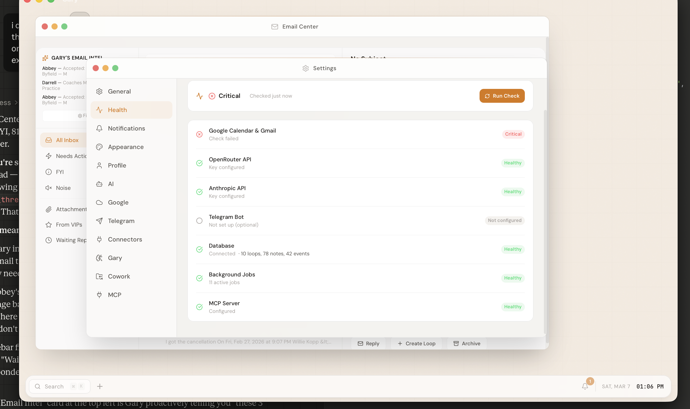

The origin
An enterprise tech seller got tired of talking about AI transformation without feeling the daily texture of it: credentials, sync jobs, tool permissions, model routing, memory, reviews, deployment, and failures at odd hours.
A local-first AI operating system built from scratch with Tauri, Rust, SQLite, and 282 MCP tools
Built by an enterprise seller who wanted to understand what it actually feels like to operationalize AI.

Selling AI is one thing. Living inside the operational mess is another.
An enterprise tech seller got tired of talking about AI transformation without feeling the daily texture of it: credentials, sync jobs, tool permissions, model routing, memory, reviews, deployment, and failures at odd hours.
Gary is an AI Chief of Staff that manages email, calendar, tasks, research, design, and deployment autonomously.
Local-first, privacy-first, and built to run your life rather than answer isolated questions. The app owns context, tools, schedules, and memory on the user's machine.
The stack is intentionally boring at the storage layer, native at the shell, and aggressive at the agent layer.
Tauri 2 wraps the app in a native desktop shell while Rust handles process lifecycle, OS integration, file access, system tray behavior, and secure IPC. It avoids the Electron tax: smaller binaries, lower RAM use, and a stronger native security boundary.
Gary's server is deliberately broad: it gives agents a standard protocol for data, design, workflow, browser, vault, and external system actions instead of adding one-off integrations per feature.
Gary classifies intent, selects the right worker, manages handoffs, and stores dispatch memory for future work.
The owner asks for research, design, code, writing, or an operational action.
Gary detects output type, risk, required tools, and whether the work needs a chain.
Researcher, Designer, Writer, or Engineer gets the job with a structured handoff.
Agents can run in parallel, pass artifacts downstream, or compete in consensus mode.
Outputs are routed to chat, vaults, public shares, code branches, or follow-up tasks.
Deep web research, competitive analysis, market intelligence, source synthesis, and prep briefs.
v0 design, Claude Design, mockups, visual assets, image prompts, and design validation.
Email drafting, documentation, executive summaries, public pages, and audience-specific framing.
Code generation, bug fixes, architecture implementation, tests, deployment, and GitHub workflow.
Most AI tools generate. Gary generates, challenges, reviews, and records why.
Optimizes for usefulness, momentum, owner context, and finished artifacts.
Challenges assumptions, missing edge cases, risk, ambiguity, and weak acceptance criteria.
sqlite-vec stores embeddings in the same SQLite database as loops, notes, contacts, settings, calendar, and dispatch memories.
No single model is best at every job. Gary routes by task type, quality needs, latency, and subscription value.
Task type goes through model routing, then Gary chooses the optimal provider and logs usage. High-reasoning work can go to Claude, image work to GPT image generation, and specific alternatives to Gemini or OpenRouter.
Primary reasoning, code generation, long-context analysis, planning, and review.
Image generation with gpt-image-2 and specialized tasks where OpenAI is the better fit.
Alternative reasoning and selected background jobs where speed or modality fit the task.
OpenRouter gives Gary access to additional models and routing choices, while the cost tracker keeps usage visible in microcents and real dollars.
The app has cron-style background work, workflow steps, email-driven commands, and guardrails to keep autonomy bounded.
60+ workflow steps coordinate recurring jobs, dispatch stages, design flows, and owner-triggered work.
Classifies email, filters noise, finds what needs action, and drafts replies without sending externally without approval.
Gary surfaces insights before the owner asks, based on inbox, calendar, loops, and recent context.
Email Gary a command and the system can classify, execute, and deliver the result through controlled pipelines.
Daily summary of calendar, email, tasks, context, and likely friction points.
Upcoming meetings can trigger automatic briefings and research packets.
Corrections become preferences. Dispatches become memory. Performance becomes a trend, not a guess.
Gary does not just execute. Gary watches what gets corrected, extracts durable preferences, and grades its own work over time.
Design is not a side quest. It is a routed workflow with validation gates and deployment targets.
Owner intent, audience, tone, assets, and acceptance criteria.
v0, Claude Design, or direct code-native design depending on output requirements.
Design tokens, handoff quality, layout, contrast, and mobile behavior are checked.
Code lands in the right format: static page, app component, or deployable artifact.
GitHub Pages and public-share routes make finished work available.
An agent with email, calendar, code, and deployment access needs boundaries at every layer.
Untrusted email content is wrapped so the model can classify it without obeying it.
Gary acts for the owner, not for random senders or embedded instructions.
External actions such as sending email require explicit approval gates.
Suspicious content is identified and surfaced rather than silently trusted.
High-impact actions wait for a person before they leave the machine.
Debounce collapses rapid-fire triggers. Concurrency locks prevent overlapping runs of the same job. Cooldowns enforce time between successful runs. Daily caps keep an event storm from becoming an operations incident.
The system is unusual because the agentic layer, memory layer, design layer, and safety layer are built as one product.
Vector search inside a local desktop app without a separate vector database.
Two AI personalities challenge assumptions before work lands.
Dispatch memory lets future agents inherit useful context across sessions.
Email can become automatic task execution through controlled classification.
Multiple agents can vote on a strategy before Gary synthesizes the answer.
Gary grades performance over time instead of treating every run as isolated.
Prompts, mockups, validation, code, and GitHub Pages sit in one pipeline.
Most tool servers have a handful. Gary exposes a full operating surface.
Email-driven agents need real boundaries, not trust in prompt wording.
The machine remains sovereign while Turso can sync cross-instance state.
These numbers explain why Gary feels less like a chatbot and more like an AI operations layer.
The choices optimize for local-first control, fast iteration, and enough integration surface for a real chief of staff.